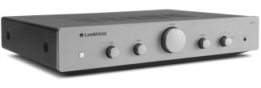
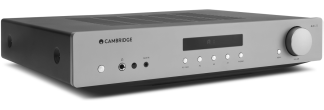
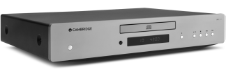
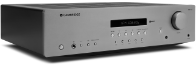
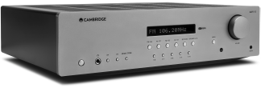

AXA25

Усилитель Cambridge Audio AXA25 – это оптимальное сочетание «цена-качество»: 25 Вт мощности на каждый канал, 3,5-мм aux-вход для смартфонов на фронтальной панели и четыре аналоговых входа с тыльной стороны для подключения всех основных источников.
AXA35

Усилитель Cambridge Audio AXA35 может похвастаться выходной мощностью 35 ватт на канал, встроенным MM-фонокорректором для обладателей виниловых проигрывателей, информативным дисплеем и ¼ –дюймовым разъемом для подключения наушников.
AXC25
Cambridge Audio AXC25 – это современный проигрыватель компакт-дисков, оснащенный первоклассным цифро-аналоговым преобразователем (ЦАП): он обеспечивает превосходную глубину и детализацию звучания, а помимо стандартных аудио CD, также воспроизводит CD-R, CD-RW и CD-ROM, с файлами MP3 и WMA.
AXC35

Cambridge Audio AXC35 – это современный проигрыватель компакт-дисков, оснащенный первоклассным цифро-аналоговым преобразователем (ЦАП). Помимо стандартных аудио CD, AXC35 воспроизводит MP3 и WMA файлы с CD-R, CD-RW и CD-ROM дисков. Также присутствует отдельный цифровой выход, позволяющий подключить внешний ЦАП или вести запись с компакт-диска в цифровой формат.
AXR85

Стереоресивер Cambridge Audio AXR85 может похвастаться 85 Вт выходной мощности, встроенным фонокорректором для виниловых проигрывателей с MM-картриджами, расположенным на фронтальной панели 3,5 мм входом для iPod/MP3-плеера, FM/AM тюнером с RDS, а также четырьмя аналоговыми входами. Встроенный Bluetooth модуль позволяет транслировать музыку со смартфона, планшета или ПК.
AXR100

Самый энерговооружённый усилитель в линейке AX предлагает внушительные 100 Вт выходной мощности на каждый канал, выход на сабвуфер и две пары терминалов для подключения акустических систем. Cambridge Audio AXR100 оснащен аналоговыми и цифровыми входами, фонокорректором, FM/AM тюнером с RDS и 3,5-мм входом. Встроенный Bluetooth модуль позволяет транслировать музыку со смартфона, планшета или ПК.